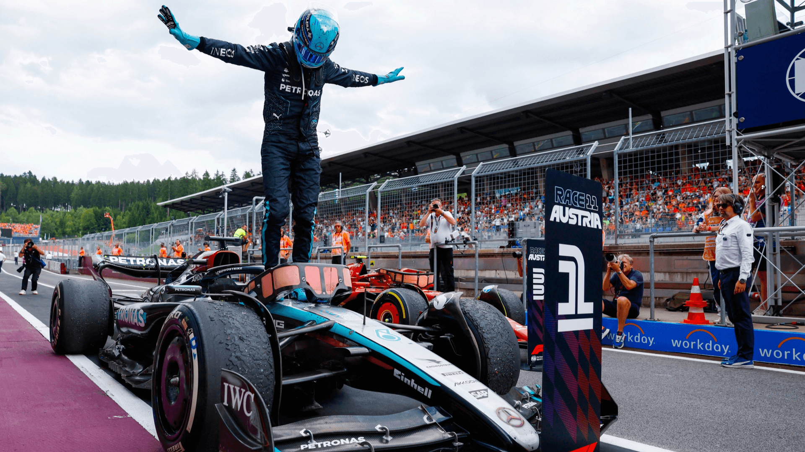
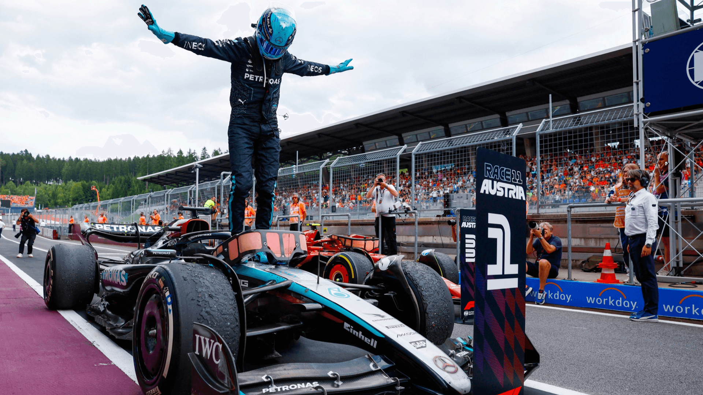

WHAT IS F1?
Formula 1, or F1, is the highest level of motorsport racing. It’s a global series where teams compete in incredibly fast, single-seat cars on tracks around the world. These races, called Grand Prix, take place in legendary locations like Monaco, Italy, and Japan, combining cutting-edge technology with intense driver skill and strategy. Each season, drivers and teams battle for two championships: one for the best driver and another for the best team (the Constructors’ Championship). With cars reaching over 200 mph and rivalries heating up both on and off the track, F1 is full of excitement, drama, and innovation. Whether you’re a hardcore fan or just curious, it’s a sport that’s hard not to get hooked on.
 
